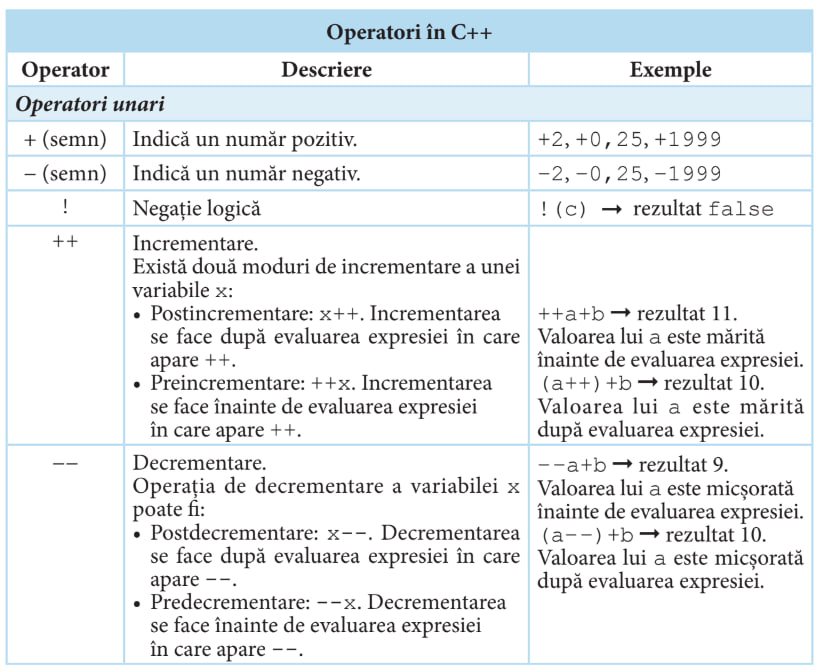
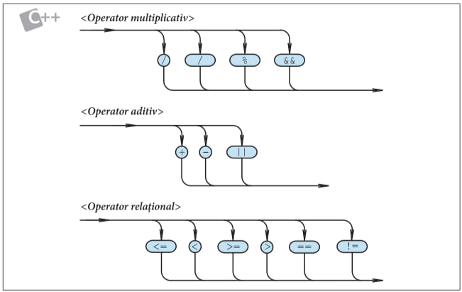

Teorie / Modulul 1
Expresii
În limbajele PASCAL și C++ formulele pentru calculul unor valori se reprezintă prin expresii. Acestea sunt formate din operanzi (constante, variabile, apeluri de funcții) și operatori (simbolurile operațiilor).

În componenţa expresiilor intră factori, termeni și expresii simple. Factorul poate fi o variabilă, o constantă fără semn, apelul unei funcţii etc.
Un termen are forma:
Exemplu
Prin expresie simplă se înțelege:
Exemplu
La rândul său, o expresie are forma:

Exemplu
 Din diagramele sintactice pentru definirea expresiilor se observă că ele sunt definite recursiv:
• o expresie este formată dintr-un operand sau dintr-un operator aplicat operanzilorsăi;
• un operand este format dintr-un literal, un identificator de variabilă sau dintr-o ex- presie scrisă între paranteze rotunde.
De exemplu, expresia a*(b+1) este formată din operatorul de multiplicare * aplicat operanzilor a și (b+1), primul operand este un identificator, al doilea este expresia b+1. La rândul ei, această expresie este formată din operatorul de adunare + aplicat unui iden- tificator și unui literal.
O expresie luată între paranteze se transformă într-un factor. Cu astfel de factori se pot forma noi termeni, expresii simple, expresii ș.a.m.d.
Prin evaluarea unei expresii se înțelege calculul valorii ei. Rezultatul furnizat depinde de valorile operanzilor și de operatorii care acționează asupra acestora. Regulile de evaluare a unei expresii sunt cele obișnuite în matematică:
– operațiile se efectuează conform priorității operatorilor;
– în cazul priorităților egale, operațiile se efectuează de la stânga spre dreapta;
– mai întâi se calculează expresiile dintre paranteze.
În funcție de mulțimea valorilor pe care le poate lua, fiecare expresie se asociază cu un anumit tip de date. Conform conceptului de dată realizat în limbajele PASCAL și C++, tipul expresiei derivă (rezultă) din tipul operanzilor și operatorilor care acționează asupra acestora. Prin urmare, tipul unei expresii poate fi dedus fără a calcula valoarea ei.
Acțiunile necesare pentru a prelucra datele unui program și ordinea executării lor se definesc cu ajutorul instrucțiunilor. Există două categorii de instrucțiuni: